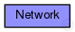

This documentation is released under the Creative Commons license
This documentation is released under the Creative Commons licenseSample Ethernet LAN: four hosts connected to two switches.
The following diagram shows usage relationships between types. Unresolved types are missing from the diagram.
The following diagram shows inheritance relationships for this type. Unresolved types are missing from the diagram.
| Name | Value | Description |
|---|---|---|
| isNetwork | ||
| display | bgb=653,267 |
| Name | Type | Default value | Description |
|---|---|---|---|
| scenarioManager.script | xml | xml("") | |
| hostA.status.initialStatus | string | "UP" |
TODO @signal, @statistic |
| hostA.cli.destAddress | string | "" |
destination MAC address, or module path name of destination station; empty means off |
| hostA.cli.startTime | double | this.sendInterval |
time of sending the first request |
| hostA.cli.stopTime | double | -1s |
time of finishing sending, negative values mean forever |
| hostA.cli.localSAP | int | 0xf0 | |
| hostA.cli.remoteSAP | int | 0xf1 | |
| hostA.cli.sendInterval | double | uniform(0s,1s) |
interval between sending requests |
| hostA.cli.reqLength | int | 100B |
length of request packets |
| hostA.cli.respLength | int | 1KiB |
length of response packets |
| hostA.srv.localSAP | int | 0xf1 | |
| hostA.queue.pauseQueue.frameCapacity | int | 100 | |
| hostA.mac.promiscuous | bool |
if true, all packets are received, otherwise only the ones with matching destination MAC address |
|
| hostA.mac.address | string |
MAC address as hex string (12 hex digits), or "auto". "auto" values will be replaced by a generated MAC address in init stage 0. |
|
| hostA.mac.duplexMode | bool |
selects full-duplex (true) or half-duplex (false) operation |
|
| hostA.mac.txQueueLimit | int |
maximum number of frames queued up for transmission; additional frames are dropped. Only used if queueModule=="" |
|
| hostA.mac.mtu | int | ||
| hostB.status.initialStatus | string | "UP" |
TODO @signal, @statistic |
| hostB.cli.destAddress | string | "" |
destination MAC address, or module path name of destination station; empty means off |
| hostB.cli.startTime | double | this.sendInterval |
time of sending the first request |
| hostB.cli.stopTime | double | -1s |
time of finishing sending, negative values mean forever |
| hostB.cli.localSAP | int | 0xf0 | |
| hostB.cli.remoteSAP | int | 0xf1 | |
| hostB.cli.sendInterval | double | uniform(0s,1s) |
interval between sending requests |
| hostB.cli.reqLength | int | 100B |
length of request packets |
| hostB.cli.respLength | int | 1KiB |
length of response packets |
| hostB.srv.localSAP | int | 0xf1 | |
| hostB.queue.pauseQueue.frameCapacity | int | 100 | |
| hostB.mac.promiscuous | bool |
if true, all packets are received, otherwise only the ones with matching destination MAC address |
|
| hostB.mac.address | string |
MAC address as hex string (12 hex digits), or "auto". "auto" values will be replaced by a generated MAC address in init stage 0. |
|
| hostB.mac.duplexMode | bool |
selects full-duplex (true) or half-duplex (false) operation |
|
| hostB.mac.txQueueLimit | int |
maximum number of frames queued up for transmission; additional frames are dropped. Only used if queueModule=="" |
|
| hostB.mac.mtu | int | ||
| hostC.status.initialStatus | string | "UP" |
TODO @signal, @statistic |
| hostC.cli.destAddress | string | "" |
destination MAC address, or module path name of destination station; empty means off |
| hostC.cli.startTime | double | this.sendInterval |
time of sending the first request |
| hostC.cli.stopTime | double | -1s |
time of finishing sending, negative values mean forever |
| hostC.cli.localSAP | int | 0xf0 | |
| hostC.cli.remoteSAP | int | 0xf1 | |
| hostC.cli.sendInterval | double | uniform(0s,1s) |
interval between sending requests |
| hostC.cli.reqLength | int | 100B |
length of request packets |
| hostC.cli.respLength | int | 1KiB |
length of response packets |
| hostC.srv.localSAP | int | 0xf1 | |
| hostC.queue.pauseQueue.frameCapacity | int | 100 | |
| hostC.mac.promiscuous | bool |
if true, all packets are received, otherwise only the ones with matching destination MAC address |
|
| hostC.mac.address | string |
MAC address as hex string (12 hex digits), or "auto". "auto" values will be replaced by a generated MAC address in init stage 0. |
|
| hostC.mac.duplexMode | bool |
selects full-duplex (true) or half-duplex (false) operation |
|
| hostC.mac.txQueueLimit | int |
maximum number of frames queued up for transmission; additional frames are dropped. Only used if queueModule=="" |
|
| hostC.mac.mtu | int | ||
| hostD.status.initialStatus | string | "UP" |
TODO @signal, @statistic |
| hostD.cli.destAddress | string | "" |
destination MAC address, or module path name of destination station; empty means off |
| hostD.cli.startTime | double | this.sendInterval |
time of sending the first request |
| hostD.cli.stopTime | double | -1s |
time of finishing sending, negative values mean forever |
| hostD.cli.localSAP | int | 0xf0 | |
| hostD.cli.remoteSAP | int | 0xf1 | |
| hostD.cli.sendInterval | double | uniform(0s,1s) |
interval between sending requests |
| hostD.cli.reqLength | int | 100B |
length of request packets |
| hostD.cli.respLength | int | 1KiB |
length of response packets |
| hostD.srv.localSAP | int | 0xf1 | |
| hostD.queue.pauseQueue.frameCapacity | int | 100 | |
| hostD.mac.promiscuous | bool |
if true, all packets are received, otherwise only the ones with matching destination MAC address |
|
| hostD.mac.address | string |
MAC address as hex string (12 hex digits), or "auto". "auto" values will be replaced by a generated MAC address in init stage 0. |
|
| hostD.mac.duplexMode | bool |
selects full-duplex (true) or half-duplex (false) operation |
|
| hostD.mac.txQueueLimit | int |
maximum number of frames queued up for transmission; additional frames are dropped. Only used if queueModule=="" |
|
| hostD.mac.mtu | int | ||
| switch1.status.initialStatus | string | "UP" |
TODO @signal, @statistic |
| switch1.l2NodeConfigurator.interfaceTableModule | string | ||
| switch1.l2NodeConfigurator.l2ConfiguratorModule | string | "l2NetworkConfigurator" |
the absolute path to the L2NetworkConfigurator; use "" if there is no configurator |
| switch1.interfaceTable.displayAddresses | bool | true |
whether to display IP addresses on links |
| switch1.macTable.agingTime | double | ||
| switch1.macTable.addressTableFile | string | ||
| switch1.stp.helloTime | double | ||
| switch1.stp.forwardDelay | double | ||
| switch1.stp.maxAge | double | ||
| switch1.stp.bridgePriority | int | ||
| switch1.stp.visualize | bool | ||
| switch2.status.initialStatus | string | "UP" |
TODO @signal, @statistic |
| switch2.l2NodeConfigurator.interfaceTableModule | string | ||
| switch2.l2NodeConfigurator.l2ConfiguratorModule | string | "l2NetworkConfigurator" |
the absolute path to the L2NetworkConfigurator; use "" if there is no configurator |
| switch2.interfaceTable.displayAddresses | bool | true |
whether to display IP addresses on links |
| switch2.macTable.agingTime | double | ||
| switch2.macTable.addressTableFile | string | ||
| switch2.stp.helloTime | double | ||
| switch2.stp.forwardDelay | double | ||
| switch2.stp.maxAge | double | ||
| switch2.stp.bridgePriority | int | ||
| switch2.stp.visualize | bool |
// // Sample Ethernet LAN: four hosts connected to two switches. // network Network { @display("bgb=653,267"); types: channel TPcable extends DatarateChannel { delay = 0.1us; // ca. 20 m Kabellänge datarate = 100Mbps; } submodules: scenarioManager: ScenarioManager { @display("p=582,24"); } hostA: EtherHost { parameters: @display("p=82,55"); } hostB: EtherHost { parameters: @display("p=258,55"); } hostC: EtherHost { parameters: @display("p=506,201"); } hostD: EtherHost { parameters: @display("p=325,201"); } switch1: EtherSwitch { parameters: @display("p=162,124"); gates: ethg[4]; } switch2: EtherSwitch { parameters: @display("p=404,133"); gates: ethg[4]; } connections allowunconnected: switch1.ethg[0] <--> TPcable <--> hostA.ethg; switch1.ethg[1] <--> TPcable <--> hostB.ethg; switch2.ethg[0] <--> TPcable <--> hostC.ethg; switch2.ethg[1] <--> TPcable <--> hostD.ethg; switch1.ethg[2] <--> TPcable <--> switch2.ethg[2]; }
This documentation is released under the Creative Commons license